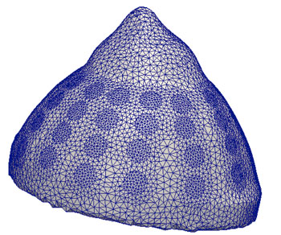

High Performance Computing
Electrical impedance tomography image reconstruction is based on the NDRM software package, in development since 2006. NDRM incorporates novel approaches in image reconstruction and is highly optimized in terms of performance for 3D applications. NDRM is a mixed package based on MATLAB, where the computationally costly components have been implemented in C/C++ using mex files and multithreaded libraries. Switching from a plain MATLAB implementation to a mixed MATLAB / C/C++ approach resulted in performance gains of 10 to 20 times.
We have recently been enhancing the performance of NDRM through use of Graphic Processing Units (GPUs) for speeding up parts of the routines involved in image reconstruction. The Jacobian computation, currently the routine that consumes about 70% of the total computing time, has been optimized for execution on single and multiple GPUs, obtaining speed-up gains of up to 50 times on four GPUs. Algebraic Multigrid Methods, a class of fast iterative solvers, are being implemented in GPUs, for the solution of the direct problem.
The ability to reconstruct medical images at higher speeds allows us to better explore experimental clinical data that is currently being acquired through trials at Dartmouth-Hitchcock Medical Center (DHMC). It also allows us to use much denser FEM models, resulting in better accuracy.

The finite element mesh shown above comprises approximately 200,000 nodes and 1,000,000 elements. Reconstruction times with optimized algorithms require several hours. Accelerated GPU reconstruction can be performed in few minutes, allowing a much faster turnaround in the investigation of different clinical cases, and exploration of the effect of different image reconstruction parameters.